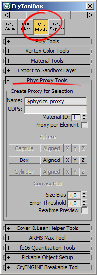
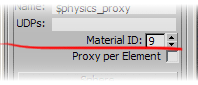
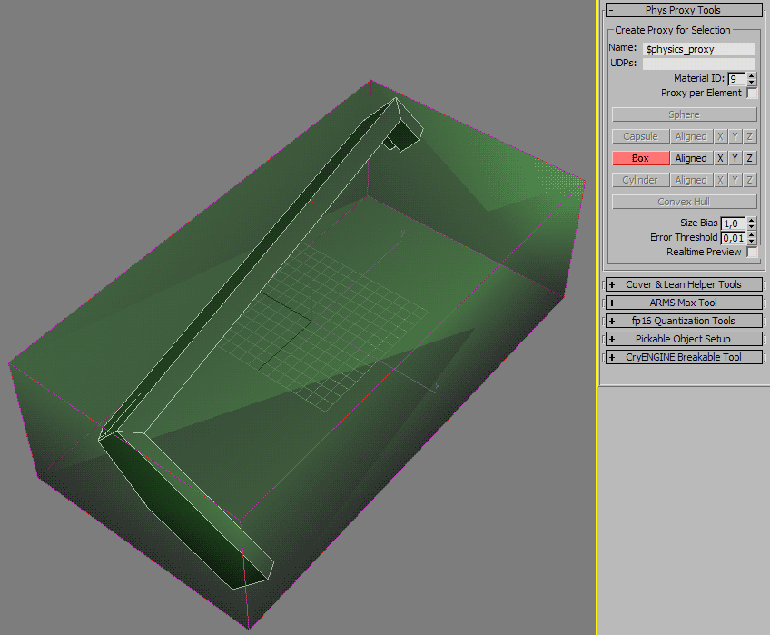
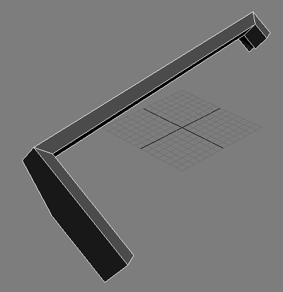

Обзор
Создание и настройка физических прокси обычно является громоздким и трудоемким процессом. Чтобы ускорить процесс, мы создали инструмент maxscript, который будет автономно создавать box-прокси и пытаться максимально точно подогнать его к геометрии рендеринга. CryToolBox устанавливается автоматически, когда вы выбираете 3dsMax в меню при запуске CryToolsInstaller.exe из папки инструментов.
Первые шаги
- Запустите CryMaxTools, откройте вкладку Модель и перейдите к свитку Phys Proxy Tool:

- Установите Материал ID счетчик на номер субматериала, который вы хотите использовать прокси:

- Выберите объекты или SubObjects, для которых вы хотите создать физический прокси.
- Нажмите одну из кнопок в ряду Коробка кнопка для создания прокси.

Параметры и характеристики
Параметры | Описание |
|---|---|
Имя | Базовое имя для создаваемых прокси. «$physics_proxy» — текущий движок по умолчанию. |
UDP-файлы | Дополнительная пользовательская строка для пользовательских свойств прокси-сервера. Разделять пробелами. |
Материал ID | Устанавливает материал ID, который будет применен к Box Proxy. |
Прокси для каждого элемента | Если этот параметр включен, инструмент создаст отдельный прокси для каждого элемента редактируемого полигона. |
Смещение размера | Увеличьте созданный прокси на столько-то сантиметров по каждой оси. Используйте для компенсации неточностей и обеспечения полной инкапсуляции сетки рендеринга. |
Порог ошибки | Скрипт прекратит уточнение выравнивания блока, когда последняя итерация уменьшит диагональ блока менее чем на «такое» количество сантиметров. |
Предварительный просмотр в реальном времени | Если этот параметр включен, будет отображаться полупрозрачный блок, чтобы можно было увидеть, как сценарий уточняет выравнивание, чтобы найти минимально возможный блок. За этим может быть интересно наблюдать, но это также замедлит процесс. |
Известные ограничения и характеристики:
- Инструмент будет принимать только объекты Editable Poly — все остальное будет игнорироваться.
- Если выбрано несколько объектов, инструмент создаст отдельный физический прокси для каждого выбранного объекта.
- Коробка Кнопка создаст рамку вокруг геометрии рендеринга без какого-либо вращения. Это простая ограничивающая рамка с выравниванием по оси.
- Выровнено Кнопка создаст рамку, максимально точно соответствующую геометрии рендеринга. Это ограничивающая рамка, выровненная по объекту. Этот вариант работает лучше всего в большинстве случаев.
- Х, Да и З кнопки работают аналогично Выровнено Кнопка, но позволит коробке вращаться только вокруг одной оси. Это может быть полезно, если вы хотите «привязать» коробку к одной оси.
- Алгоритм, используемый для поиска минимального ограничивающего объема, не является точным на 100%. Скрипт буквально будет вращать коробку до тех пор, пока она не станет самой маленькой. При этом он пытается сузить область поиска, постоянно совершенствуя диапазон поиска. В очень редких случаях это может привести к тому, что оптимально выровненная ограничивающая рамка не будет найдена. Также очень немногие случаи могут иметь несколько оптимальных ориентаций. В таких случаях это может помочь работать с выбором подобъектов и Х, Да, З кнопки.
- Кнопки «Капсула», «Цилиндр», «Сфера» и «Выпуклая оболочка» в настоящее время отключены. Эти функции могут быть добавлены позже.
- В настоящее время инструмент не поддерживает отмену/повтор действия, поэтому пользователю придется удалить поле вручную, если оно неудовлетворительно.
- При работе со сложными объектами лучше всего использовать выбор подобъектов для создания нескольких прокси, см. изображение ниже:
